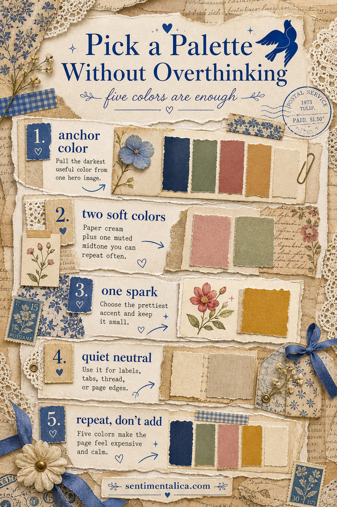
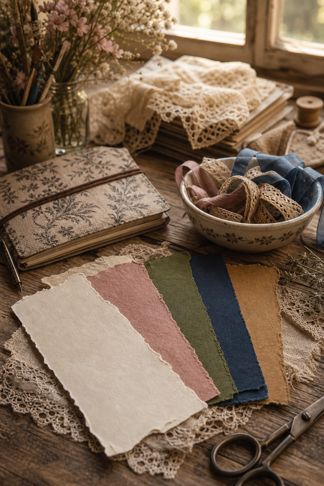
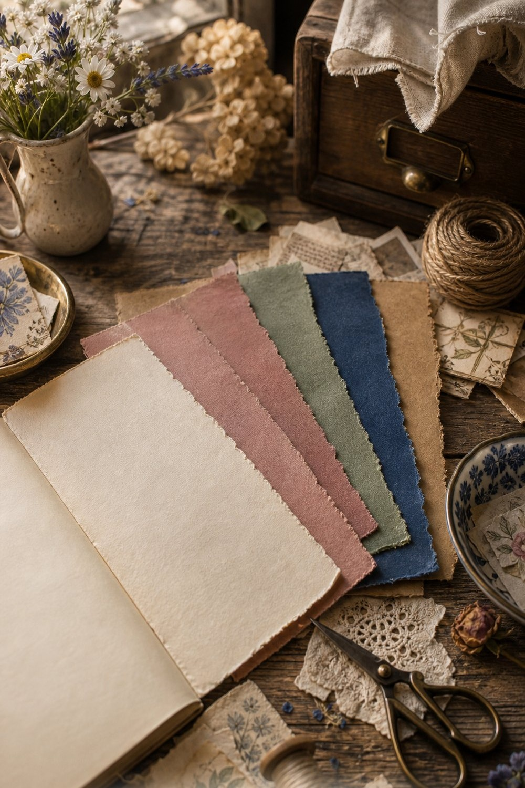

If a page feels messy, it usually does not need more decoration. It needs fewer colors. Choose one image you love, pull five colors from it, and let those five colors make the decisions for you.

Start with an anchor color. This is usually the deepest shade in the image: navy, forest green, brown, charcoal, or wine. Use it only a few times so it gives the page weight without taking over.

Then choose two soft working colors. One should be close to paper cream. The other can be a muted midtone like sage, dusty pink, blue-grey, or tan. These are the colors you can repeat again and again.

The last color is the spark. It can be tiny: a flower center, a ribbon edge, a postage mark, a lantern red. If you keep the spark small, it makes the whole spread feel more expensive and more deliberate.
For more gentle junk journal ideas and color inspiration, keep reading the Sentimentalica journal.